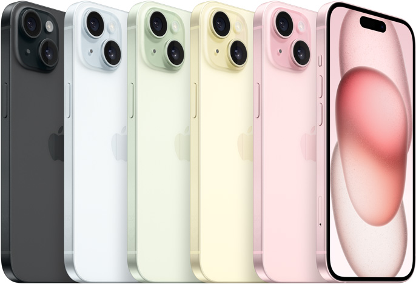
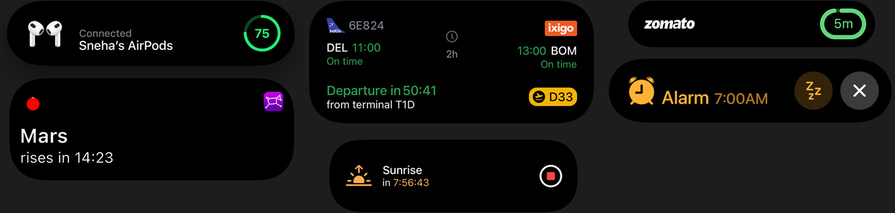

IPHONE 15

From ₹79900.00*
Add to cart
128 GB ROM
15.49 cm (6.1 inch)
Super Retina XDR Display
48MP + 12MP | 12MP Front Camera
A16 Bionic Chip,
6 Core Processor Processor

Want to quickly capture the moment before it’s gone? You no longer have to switch to Portrait mode. If your subject is a person, dog or cat, iPhone 15 automatically captures depth information. So you can choose to instantly see your photo as a portrait, with an artful blur effect. Or later in the Photos app.
TAKE A CLOSER LOOK

Dynamic Island bubbles up alerts and Live Activities — so you don’t
miss them while you’re doing something You can track your next ride, see who’s calling,
check your flight status, and so much more.

Colour through
and through.
Tough all around.
The innovative new design features back glass that has colour infused throughout the material. A custom dual-ion exchange process for the glass and an aerospace-grade aluminium enclosure help make iPhone 15 incredibly durable.
